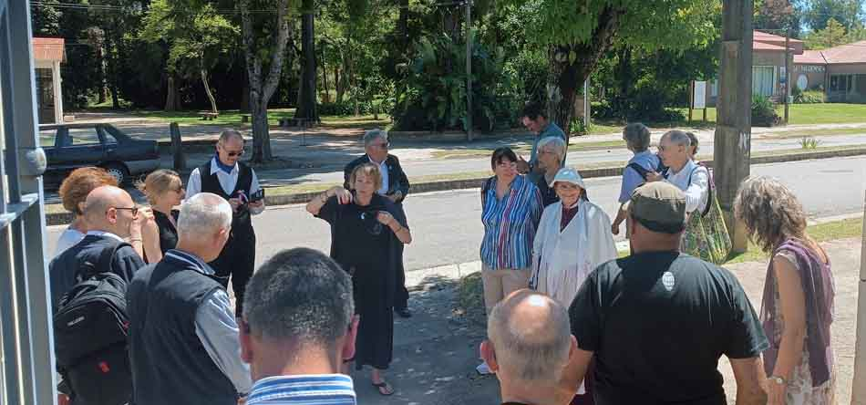
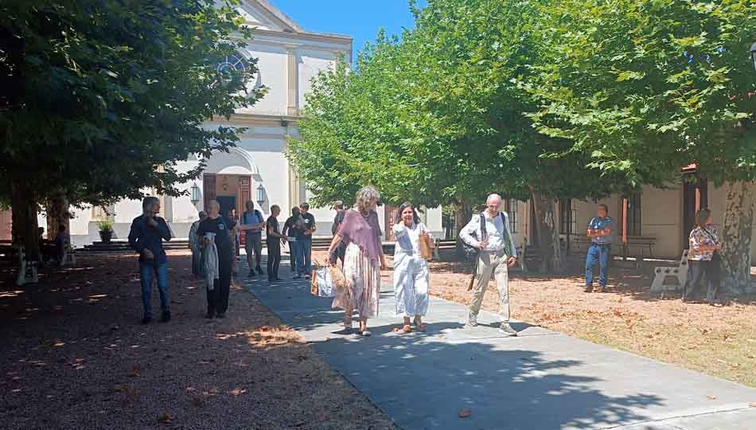
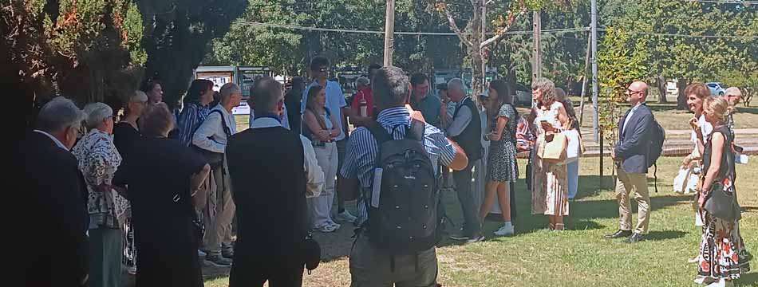

Recorrido histórico
En Colonia Valdense, Colonia, Uruguay, conviven varios espacios históricos y públicos que sintetizan la huella de la colonización valdense y el desarrollo urbano de la ciudad.
Espacios históricos principales
Templo Valdense de Colonia Valdense
Erigido en 1898 sobre la Avenida Armand Ugon, es el principal edificio religioso de la comunidad y un referente arquitectónico de la ciudad, estrechamente vinculado a la historia de la inmigración piamontesa.
Museo Valdense
Ubicado en la misma zona, conserva y difunde el patrimonio histórico, religioso y cultural de los valdenses, con objetos procedentes de las primeras colonias piamontesas de la región.
Liceo Daniel Armand Ugón
Fundado en 1888 como Liceo Evangélico Valdense, fue uno de los primeros institutos de educación secundaria del país y hoy sigue siendo un pilar institucional del centro de la ciudad.
Plazas y espacios públicos
Plaza de Colonia Valdense / Plaza de la Libertad
En 2025 se inauguró allí un monumento a la Colonización Valdense, con un libro abierto y una espiga de trigo, que simbolizan educación, fe y trabajo. Además del monumento, la plaza cuenta con mejoras recientes en veredas, iluminación, escenario y mobiliario, y se utiliza como eje de actos cívicos y culturales.
Plaza de Deportes Profesor Juan Alberto Bonet
Espacio público equipado con mesas, bancos, hamacas y cancha, sujeto a un plan de reacondicionamiento municipal que incluye veredas y mejoras de infraestructura.
Recorrido de la delegación
La delegación recorrió la ciudad, visitando espacios históricos y públicos de Colonia Valdense, reconociendo la historia de la inmigración y el legado cultural que forma parte central de la identidad local.



